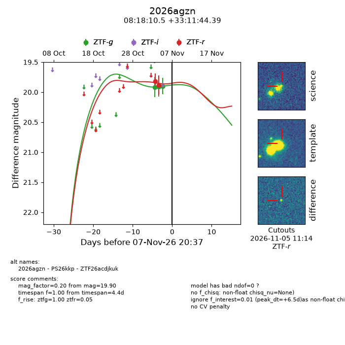
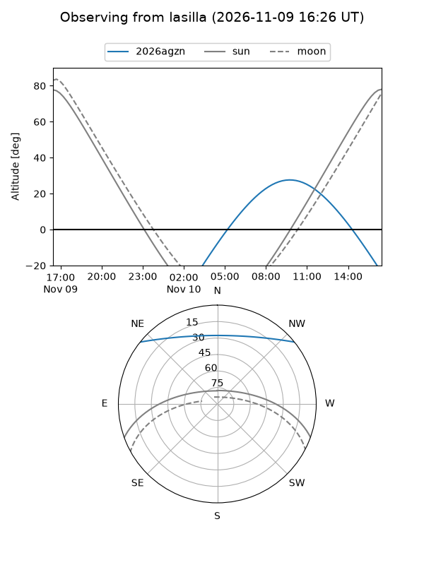
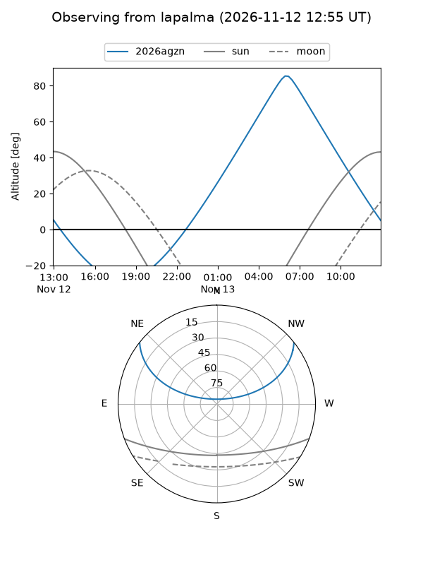
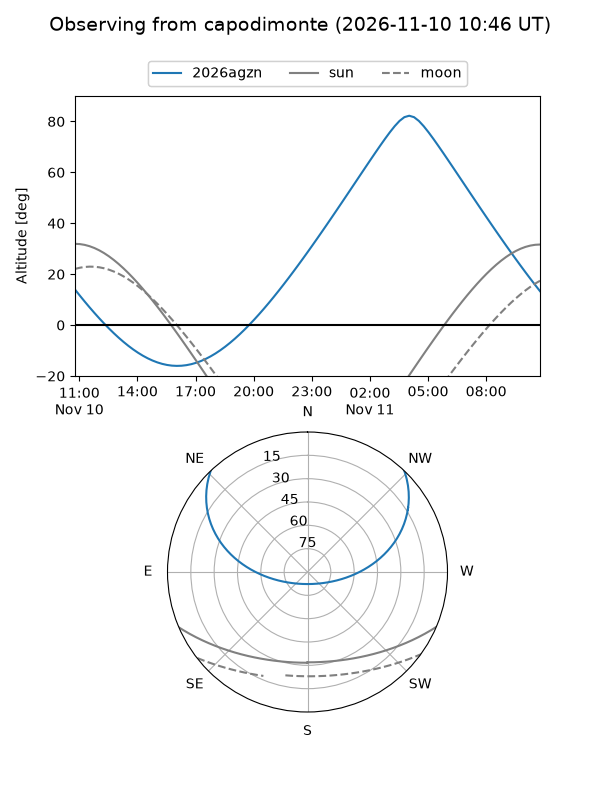
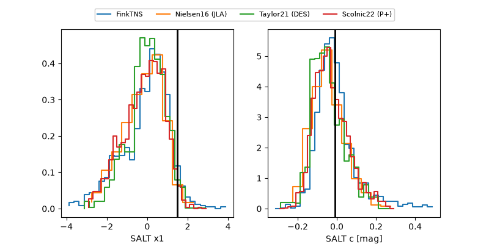

2026agzn
Target 2026agzn at 2026-11-07 20:39
Aliases and brokers:
FINK-ZTF: ztf.fink-portal.org/ZTF26acdjkuk
Lasair-ZTF: lasair-ztf.lsst.ac.uk/objects/ZTF26acdjkuk
ALeRCE-ZTF: alerce.online/object/ZTF26acdjkuk
YSE-PZ: ziggy.ucolick.org/yse/transient_detail/2026agzn
TNS name: wis-tns.org/object/2026agzn
Direct TNS query: direct search
alt names
ZTF26acdjkuk (ztf,fink_ztf)
2026agzn (tns,yse)
PS26kkp (panstarrs)
Coordinates:
equatorial (ra, dec) = 124.5439,+33.19566
equatorial (HMS+DMS) = 08:18:10.53,+33:11:44.39
galactic (l, b) = (188.9272,+31.65683)
Flags:
peak dt: +6.5
Photometry:
last ztfg=19.90, ztfr=19.89
3 ztfg, 2 ztfr detections
Lightcurve

Visibility



Additional plots
